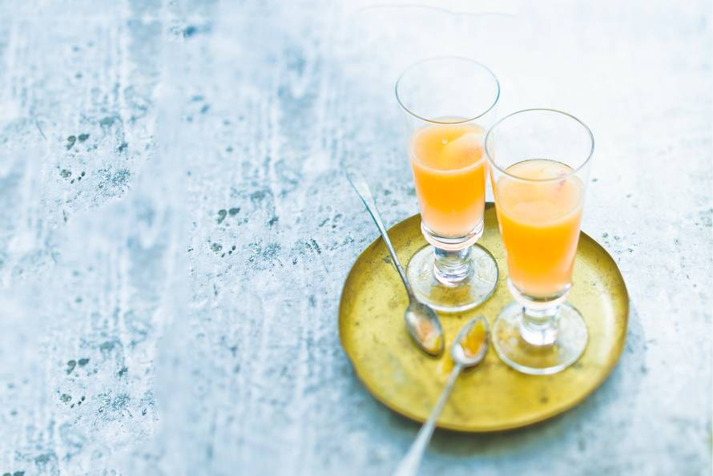

"When life throws pies at you, you make yourself a tall, cool glass of piemonade!"
A refreshing summer cocktail from Homestar Runner.
Ingredients
- Two peaches
- 375ml Processco
- (Optional) Lemon wedge
Recipe instructions
- Breng een pan water aan de kook. Snijd de perziken aan de onderkant kruislings in en leg ze 20 sec. in het kokende water. Neem ze eruit en laat ze een beetje afkoelen. Pel het velletje eraf. Halveer de perziken en verwijder de pit.
- Doe het vruchtvlees in de blender, voeg 1/3 van de prosecco toe en maal tot een fijne puree. Pureren met de staafmixer kan ook, dan wordt de puree minder fijn. Voeg de rest van de prosecco toe en pureer kort. Verdeel het drankje over de champagne- of cocktailglazen en serveer direct.
- Tip! Vervang de perziken door 250 g aardbeien en u heeft een Rossini.
Return to top
Return to main page